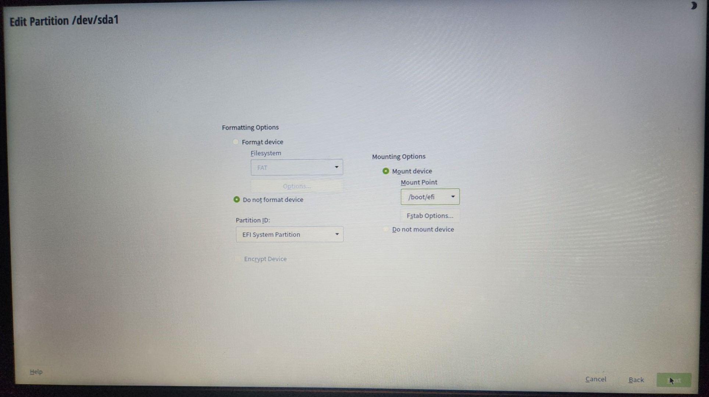

Welcome to my project page documenting the performance comparison of four Linux distributions and the creation of my first website!
On this website, I will detail the steps I took towards completing my final project for CIS 100. I will be comparing the performance of multiple Linux distros on a single PC while also creating a website (this one) to document the process.
First things first, let’s make a website. Establishing a good Git workflow (adding, staging, and finalizing changes) is key to any project, as it allows you to keep track of changes and revert to previous versions if needed.
.png "This is the Git Bash I got from gitforwindows.org")
Here, I am creating a local (on my computer) directory (folder) with
a text document containing, well, this—the raw information for a
website. Once that's done, you initialize the folder as a Git
repository using the git init command, creating a hidden .git folder
that tracks changes in that folder. After that, you link
the folder to a remote repository on GitHub and upload your changes with a push command
to GitHub. Finally, you can view that information as a website using
GitHub Pages by enabling it in the repository settings.
Now let's get down to business. In this step, we'll be taking a completely wiped-out computer with nothing other than a BIOS on it and using each distro's installer to partition a piece of the unused hard drive for each distro to use. In the end, we will have four separate operating systems on one computer. The four distros I'll be installing are:
The first step in all this is to get each distro on a mountable medium. This will allow us to boot the computer (using the BIOS) from that medium and begin our installation process. The medium I used to mount each distro's ISO on was a flash drive, though other mediums (like CDs) can also be used.
Now we need to partition our EFI. This is a smaller piece of the hard drive where we will put each distro's bootloader. We can tell all the distros to share this partition, so we only need to make it once.

Once we have our EFI partitioned, we can get started on the long but simple task of installing our distros. First, we will put our flash drive into the computer and shut it down. Once we power up our PC into the BIOS, we can boot through our flash drive, accessing each distro's installation program.

After partitioning a piece of our drive for the distro to use as its root, we just need to point the distro to where the EFI is so it can install its bootloader there. Once that's all said and done, it will begin its installation process—and that's it! Now all that's left is to repeat the process until we have all the distros we want installed on the PC.
If we did everything properly by pointing each distro to our one EFI partition, we should be able to access each distro when we boot up our computer by launching the bootloader—in our case, GRUB.

We will be using the default system monitor that each distro provides to compare their performance while running an in-browser benchmark (Wirple Benchmark) to stress the hardware. I will also be giving a live demo of this process for one of the distributions as my presentation in class.
The Results:
Linux Mint Cinnamon


Fedora

openSUSE


Linux Mint Xfce
All in all, the test goes through four different benchmarks to stress the computer:
Once the process is over, the benchmark provides a score:
Given the results, as well as my own observations during the test, it was clear that both Linux Mint Xfce and openSUSE took the longest in the Cube test to drop below 10 FPS. Many factors may have also played a role in the results, such as taking a screenshot, which required a program to open during the test, clearly affecting the results.
In the end, I still believe the lighter-weight distros like Linux Mint Xfce and openSUSE "felt" the fastest, and that the project was a huge success. I learned more than I could have ever imagined and my old piece of junk laptop actually made it through the experiment.